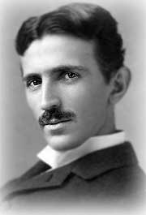

Nikola Tesla
(1856/07/10 - 1943/01/07)
Ingeniero e inventor serbio
""Cada ser vivo es un motor adaptado a las ruedas del universo""
- Ingeniero, inventor y visionario que cambió el mundo
- Área: Ingeniería eléctrica e ingeniería mecánica
- Reconocido por: Inventos, corriente alterna, motor asíncrono, campo magnético rotativo, radio y tecnología inalámbrica
- Padres: Milutin Tesla y Djuka Mandic
- Altura: 1,88 m
- Nombre: Pronunciación original
RESUMEN
Científico innovador con ideas poco convencionales, conocido por sus contribuciones al diseño del sistema moderno de suministro de electricidad de corriente alterna (CA). Inventor del motor asíncrono de corriente alterna, con patentes relacionadas con el sistema polifásico que contribuyó enormemente al desarrollo de la electricidad y el magnetismo a finales del siglo XIX y principios del XX."No me importa que me hayan robado la idea ... Me importa que no tengan ninguna"
--Nikola Tesla
Nikola Tesla nació el 10 de julio de 1856 en Smiljan, Croacia.
FAMILIA
Hijo de Milutin Tesla, un sacerdote ortodoxo; su madre, Djuka Mandic, cuyo padre también fue sacerdote ortodoxo, también fue inventora con un talento especial para la fabricación de herramientas para el hogar, además de tener una gran capacidad para memorizar poemas épicos. Sus progenitores eran del oeste de Serbia, cerca de Montenegro. Tesla fue el cuarto de cinco hermanos. Su hermano mayor llamado Dane se mató en un accidente de equitación cuando Nikola tenía cinco años. Esa temprana muerte lo marcó para toda la vida, ya que se consideró causante del accidente. Sus abuelos fueron Nikola Tesla, Sr. y Georgi Mandic.
Fisonomia y personalidad
En 1861, asistió a la escuela primaria en Smiljan, donde estudió aritmética y religión. En 1862, la familia se trasladó a Gospic, Imperio austríaco, donde su padre trabajó como pastor. A los diez años, construyó un pequeño motor eléctrico para conectar una bombilla y comenzó a estudiar alemán, inglés y francés. En 1870, se trasladó a Karlovac, Croacia, para asistir al Gimnasio Real de Gospic, donde fue influenciado por su profesor de matemáticas Martin Sekulic. Desde muy pequeño demostró un talento excepcional para las matemáticas y los maestros desconfiando de su genio, le obligaban a pasar pruebas para demostrar que no había copiado sus teorías. G raduado en 1873, regresó a su pueblo natal donde poco después de su llegada contrajo el cólera. Estuvo postrado en cama durante nueve meses y cerca de la muerte en varias ocasiones. Su padre le prometió enviarle a la mejor escuela de ingeniería si se recuperaba de la enfermedad (su progenitor deseaba que se dedicara al sacerdocio). En 1874, Nikola Tesla evitó su reclutamiento por el ejército austrohúngaro huyendo a Tomingaj, cerca Gracac. Durante 1875, se matriculó gracias a una beca en la Escuela Politécnica de Graz, Austria. Durante su primer año nunca perdió una clase y obtuvo las calificaciones más altas posibles. Al final de su segundo año de estudios perdió su beca y se convirtió en un adicto a los juegos de azar. Durante su tercer año se jugó el dinero de la matrícula. Nunca se graduó en la universidad y en diciembre de 1878, dejó Graz y cortó relaciones con su familia tratando de ocultarles el abandono de los estudios.
Ingeniero
En 1881, se trasladó a Budapest para trabajar en Ferenc Puskas donde llegó a ser jefe de electricistas y más tarde ingeniero del primer sistema telefónico del país. Durante su empleo, realizó muchas mejoras en el equipo de la estación central y afirmaron haber perfeccionado un teléfono que nunca se patentó.
Conpañia Edison
En 1882, ingresó en la Continental Edison Company en Francia, para diseñar y mejorar equipos eléctricos. En junio de 1884, se trasladó a la ciudad de Nueva York donde fue contratado por Thomas Edison para trabajar en Edison Machine Works diseñando motores y generadores, pero lo abandonó para dedicarse en exclusiva a la investigación experimental y a la invención. En 1885, sostenía que podría rediseñar los motores y generadores de Edison mejorando su servicio y economía. Según Tesla, Edison le comentó: "Tengo cincuenta mil dólares para usted si puede hacerlo". Tras meses de trabajo cumplió con la tarea y demandó el pago. Edison le dijo que estaba bromeando, y le respondió: "Usted no entiende nuestro humor estadounidense". A cambio, le ofreció un aumento de salario pasando de 10 dólares a la semana a los 18. Tesla rechazó la oferta y se despidió.
Tesla Electric Light & Manufacturing
Un año después, fundó su propia compañía, la Tesla Electric Light & Manufacturing. Los inversores no estuvieron de acuerdo con sus planes para el desarrollo de un motor de corriente alterna relevándolo de su puesto en la compañía.
Corriente alterna
Durante 1888, tuvo lugar su primer diseño del sistema práctico para generar y transmitir corriente alterna para sistemas de energía eléctrica. Desarrolló el motor de inducción de corriente alterna, eliminando el conmutador y las escobillas de encendido de los motores de corriente continua e introdujo mejoras en el campo de la transmisión y generación de energía de corriente alterna, constatando que tanto la generación como la transmisión de esta se podían obtener de forma bastante más eficaz con una corriente alterna que en el caso de la corriente continua, la más comúnmente utilizada en aquella época.